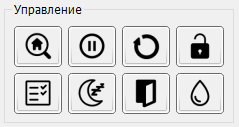

Панель "Управление" содержит набор кнопок, отвечающих за базовые функции контроллера "GRBL". Состав, посылаемые команды (коды команд), и описание приведены в таблице в порядке их расположения на панели: слева направо, сверху вниз.
| Кнопка | Команда | Описание |
|---|---|---|
| Домой | $H | Поиск домашнего положения |
| Удерживание | ! или ~ | Остановка текущего перемещения (команда !) или возобновление движения (~) |
| Сброс | 0x18 | Программный сброс контроллера |
| Разблокировка | $X | Принудительная разблокировка режима аварии |
| Проверка | $C или 0x18 | Включение (команда $C)/выключение (команда 0x18) режима проверки УП |
| Сон | $SLP | Перевод контроллера в режим пониженного энергопотребления |
| Дверь | 0x84 | Принудительный перевод контроллера в режим срабатывания датчика двери |
| Охлаждение | 0xA0 | Включение/выключение системы водяного охлаждения |
Следует отметить, что при выключении режима проверки УП, посылается команда программного сброса с последующим восстановлением состояния контроллера и смещений рабочих координат.